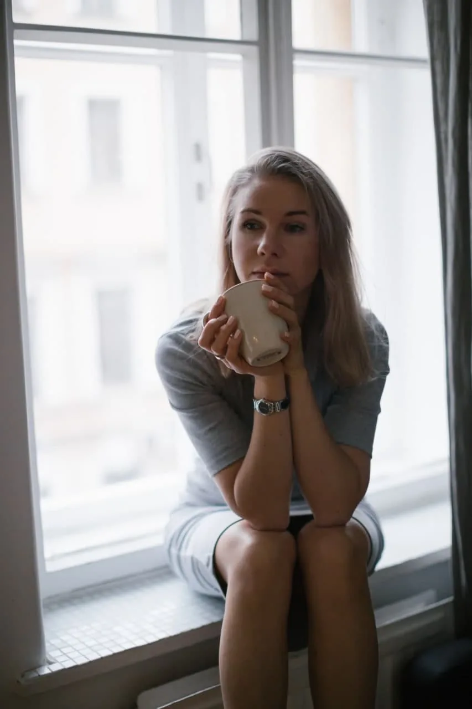

Индивидуальная консультация
5 000 ₽50 минут
- Онлайн или очно в Петербурге — цена одна
Здравствуй. Здесь можно выдохнуть.
Я Ирина Ошемёткова, аккредитованный медицинский психолог: перинатальный, репродуктивный, семейный. Помогаю, когда:
50 минут5 000 ₽онлайн или очно в Петербурге

Работаю со взрослыми: можно прийти одной, вдвоём или всей семьёй. Выбери, что ближе, — откроется своя глава.
Не уверена, что это ко мне? Напиши пару строк в Telegram — отвечу честно, моя ли это тема.
Работаю в подходах с доказанной эффективностью: когнитивно-поведенческая терапия, схема-терапия, навыки DBT, семейная системная терапия.
Я работаю рядом с твоим врачом, а не вместо него, и не отговариваю от лечения.
Об этом здесь можно говорить прямо: выкидыш, замершая беременность, внематочная, прерывание по медицинским показаниям, мертворождение, смерть малыша. И о том, что тоже может ощущаться потерей: экстренное кесарево, недоношенность, малыш в реанимации, тяжёлый диагноз.
Партнёры тоже проживают беременность, роды и утрату — и не обязаны справляться молча. Можно прийти вдвоём, а можно и без пары.
Я аккредитованный медицинский психолог, перинатальный, репродуктивный и семейный психолог. Работаю внутри медицины, рядом с врачами, поэтому о сложном говорю простыми словами.
Опираюсь на КПТ, схема-терапию, навыки DBT и семейную системную терапию.
Не пугаю, не виню и не обесцениваю. Сначала слышу, что с тобой, — советы потом, если понадобятся.
Платишь за одну встречу. Решение о каждой следующей — за тобой.
5 000 ₽50 минут
Стоимость — при записи
В Telegram, SMS или на почту — можно взять готовый шаблон письма.
Предложу ближайшее свободное время — выберешь удобное.
Рассказываешь столько, сколько хочется. Вместе находим, с чего начать.
Обсуждаем, нужна ли следующая встреча. Если тебе лучше к другому специалисту, скажу, к кому.
Не нашла свой вопрос? Спроси меня в Telegram.
Да. Готовый запрос не нужен: можно начать с «мне трудно об этом говорить» — дальше разберёмся вместе.
Значит, так сейчас нужно. Слёзы ничего не портят: можно молчать, делать паузы и возвращаться к разговору, когда получится.
Да. То, что ты рассказываешь, остаётся между нами и не появится ни здесь, ни в моих соцсетях. Исключения — только когда под угрозой чья-то жизнь или здоровье. О них расскажу на первой встрече.
Отзывов здесь нет: по профессиональной этике я не прошу клиентов публично рассказывать о встречах — это слишком личное. Где я работаю и чему училась — в разделе «Обо мне».
Зависит от запроса и твоего темпа: иногда хватает одной-двух, иногда нужна более долгая работа. Ожидания обсудим на первой встрече.
Можно. Если партнёр пока не готов, можно прийти одной или одному — это тоже работа на двоих.
По удобной видеосвязи. Нужны наушники и место, где можно говорить свободно. Если малыш рядом или на руках — это нормально.
Нет. Я психолог, а не врач: диагнозов не ставлю и лекарств не назначаю. Если увижу, что нужен врач, скажу прямо и помогу его найти.
Написать можно в любое время, но я не экстренная служба и могу ответить не сразу. Если плохо прямо сейчас — вот номера, где ответят сразу.
Собери письмо за минуту — я отвечу сама и предложу ближайшее время.
Ирина Ошемётковамедицинский психолог
Пока ждёшь ответа — практики без записиПодышать, разобрать тревожную мысль, найти слова для близких.Так увидит Ирина
Ирина, здравствуйте! Хочу записаться на консультацию. Подскажите, пожалуйста, ближайшие свободные даты?
Отвечаю между встречами. Если ответа долго нет — продублируй на почту.